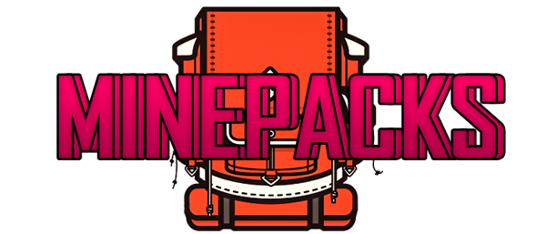

THE SMG-SMP WIKI IS STILL UNDER CONSTRUCTION. EXPECT BUGS.

What Is Minepacks?
Minepacks is an extra inventory page with a configurable amount of slots. It is accessed via a command or an item provided to the inventory.
How Do We Use Minepacks?
We use Minepacks to give every player an extra 54 slots of inventory space. It's also safe if a player is to die, so a player won't have to worry about losing hundreds of extra items upon death.
How Does Minepacks Work?
Where Can You Get Minepacks?